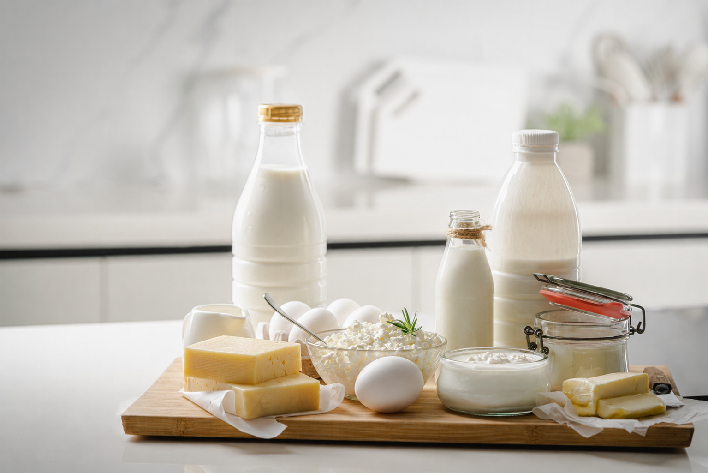
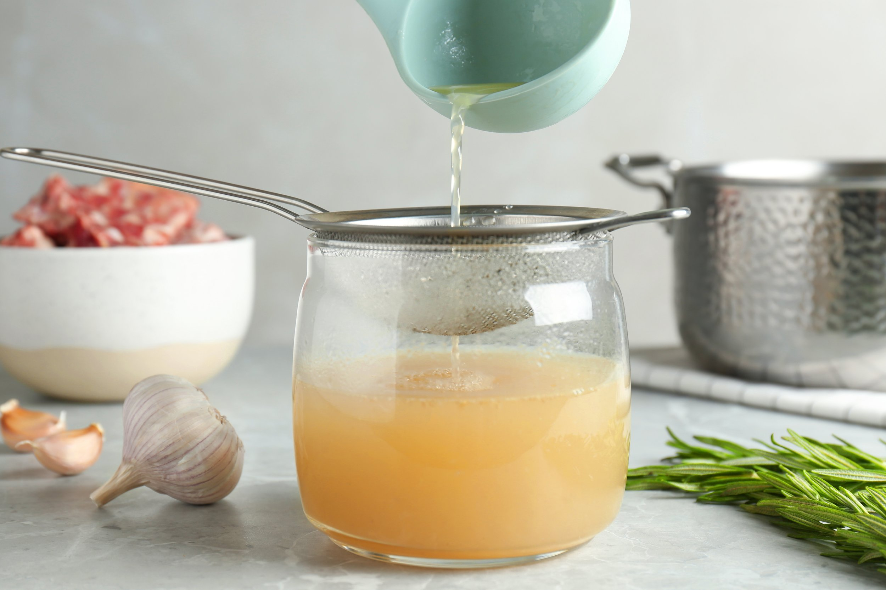
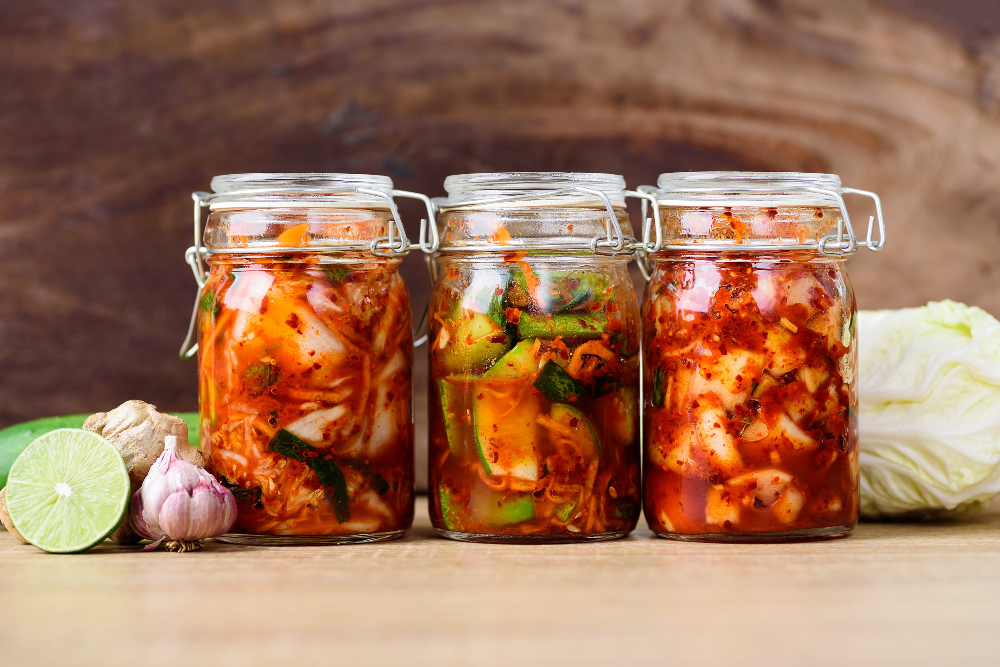

As I know from my own experience, if you have surgery scheduled in the next few weeks — even though you have the ‘luxury’ of being able to plan ahead — it can still feel overwhelming. There are just so many things to think about, especially all of the practical details.
But once those are under control, one of the most effective things you can do to ensure that your recovery proceeds as smoothly as possible is to think carefully about the food that is going to nourish you through this process, and prepare as much as possible beforehand.
Having simple, yet nutrient-dense ingredients and meals ready to go has two clear advantages. First, you or your carer can immediately begin providing your body with the raw materials it needs for healing — even while you are still in hospital. And second, when you do return home, you won’t need to worry about cooking or shopping. Instead, you can focus on resting, and allowing your body to do the work of recovery.

Pantry staples that help.
Start by stocking your kitchen with a few nutrient-dense basics that will make meals easy to prepare, and stay well away from all ultra-processed and sugary foods and drinks. Some of the most useful pantry staples include:
- Pasture-raised eggs, if you can find them. These tend to be more nutrient-dense than eggs from hens kept in barns. Organic is ideal, but if that’s not possible, choose eggs from free-range hens — they really are worth paying a little extra for.
- Slow-cooked broths — think chicken, beef, fish, or vegetable. These need to be prepared in advance, but they freeze well and can later be used as the foundation for an endless variety of dishes, especially soups.
- Full-fat unsweetened, plain yoghurt or kefir.
- A few of your favourite cheeses.
- Healthy fats like butter, olive oil, or coconut oil.
- A jar or two of sauerkraut or other lacto-fermented vegetables like red cabbage or kimchi.
- A selection of seasonal vegetables and fresh fruit, including avocados, plus some gently stewed fruit such as apple, or baked fruit like apricots or plums.
- Pre-made soups, stews, and casseroles, frozen in individual portions.
- Some tinned fish if you eat it — especially sardines, tuna, cod-livers, or salmon in olive oil.
These are exactly the kinds of foods that your body needs from the very beginning. They provide the protein, healthy fats, slow-releasing carbohydrates, minerals, vitamins, and antioxidants that your body relies on to repair tissue, bones, and organs, while also supporting digestion and immune function.

Support your digestion before surgery.
It’s also worth taking the time to support your digestion in the lead-up to surgery, as a well-functioning digestive system will help your body absorb the nutrients it needs for healing, both before and after your procedure.
In practical terms, one of the best ways to do this is to regularly consume foods that support your gut microbiome — in particular, traditionally cultured and fermented foods such as sauerkraut, kimchi, kefir, and plain yoghurt. These are all excellent sources of beneficial bacteria that help rebalance your microbiome. In addition, try to make sure that your diet includes plenty of antioxidant- and fibre-rich vegetables, fruits, seeds, nuts, and whole, unrefined grains. They aid digestion and counteract the free radicals that are created by the stress of surgery.
Raw vegetables and fruits also contain enzymes that help break down proteins, making them easier to digest. This is why I often serve a herb-based paste or a freshly-made salsa with a main course.
You may also find it helpful to keep meals relatively simple in the days immediately before surgery, focusing on foods that you know suit you, rather than trying out too many new dishes.

Plan a few simple meals ahead of time.
Prior to both of my surgeries, I found it helpful to make a simple list of meals I wanted to prepare, and then work through it — while also thinking about how I might feel each day. For example, on your first day, you probably won’t want to eat anything too heavy, but at the same time you want as much nourishment as possible, which, if you rely on the food you are served, can sometimes be challenging.
Hospital meals are designed to suit a wide range of patients and dietary requirements, but they don’t always provide the kind of nutrient-dense foods that best support recovery after surgery.
For this reason I always recommend taking nourishing food with you when you go in for your procedure, or at the very least, asking a family member or friend to bring something in later. Good options are a thermos of home-made broth or a light soup, a smoothie made with yoghurt or kefir kept in a cooler bag, and something a little more substantial such as a slice of home-made frittata — which will provide valuable protein and healthy fats.
Next stage: The first few days after surgery